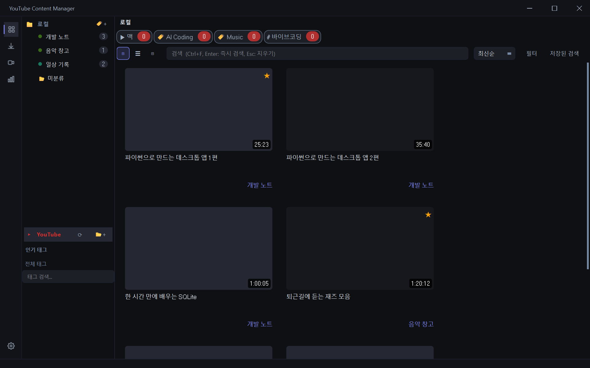
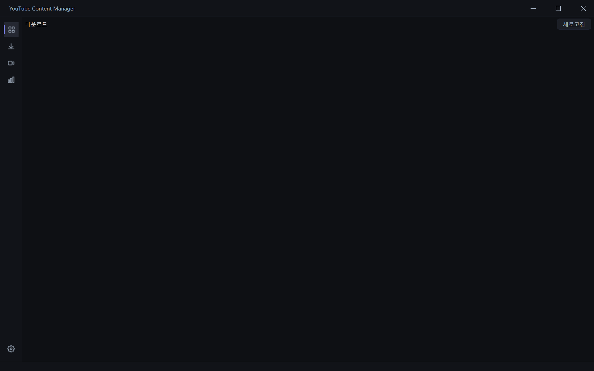
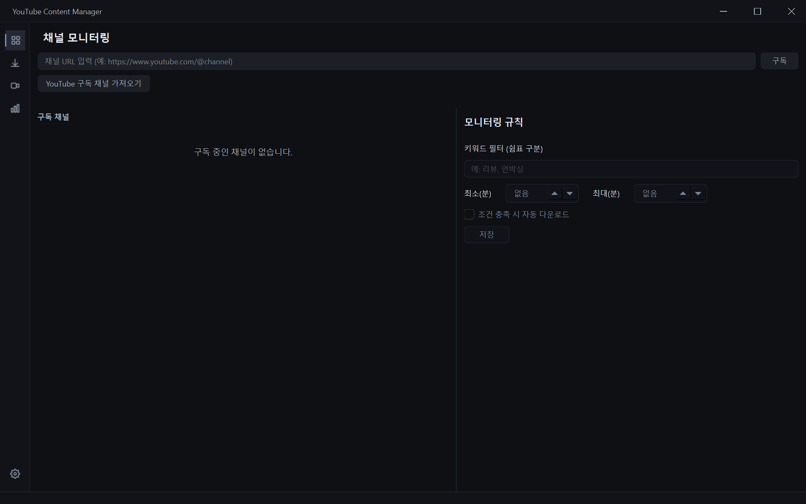
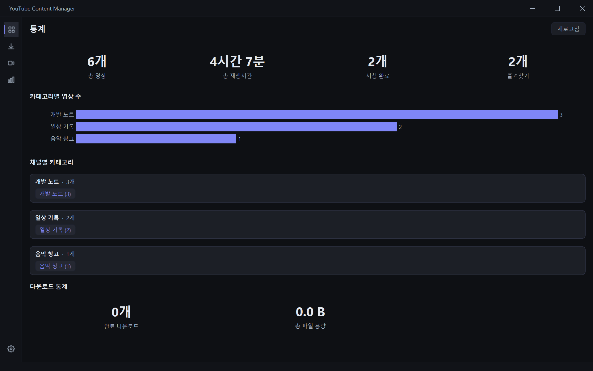
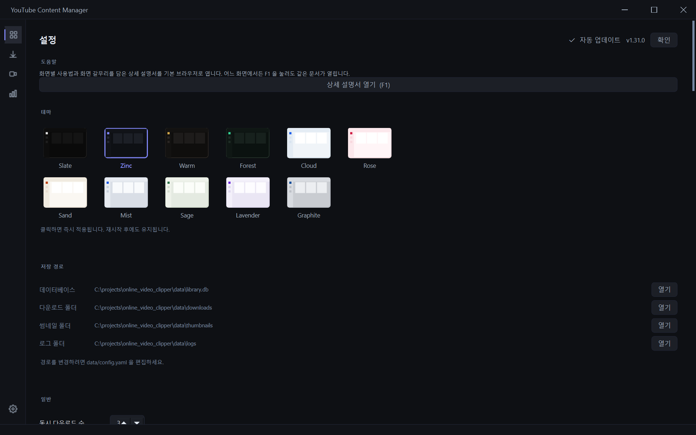

상세 설명서
YouTube Content Manager 사용 설명서입니다. 화면별로 무엇을 할 수 있고, 어디를 누르면 되는지를 담았습니다.
앱 안에서는 아무 화면에서나 F1 을 누르거나, 설정 → 도움말 → 상세 설명서 열기 로 이 문서를 열 수 있습니다.
갈무리는 scripts/capture_screenshots.py 가 표본 자료로 실제 화면을 그려 만든 것이라, 여러분 화면의 자료와는 다릅니다.
목차
처음 시작하기
- 앱을 실행하면 라이브러리 화면이 열립니다.
- 영상 주소(URL)를 복사하면 클립보드를 감지해 추가 여부를 물어봅니다. 이 동작은 설정 → 일반 → 클립보드 감지 에서 끌 수 있습니다.
- 추가한 영상은 제목·길이·채널 정보를 자동으로 채웁니다.
저장 위치(데이터베이스·다운로드 폴더·로그)는 설정 → 저장 경로 에서 확인할 수 있고, data/config.yaml 로 바꿉니다.
라이브러리
영상을 모으고, 분류하고, 찾고, 재생하는 중심 화면입니다.

왼쪽 — 분류 트리
| 항목 | 설명 |
|---|---|
| 로컬 | 내가 직접 추가한 영상. 하위에 카테고리(폴더)를 계층으로 만듭니다. |
| 미분류 | 카테고리를 아직 정하지 않은 영상 |
| YouTube | 로그인한 계정의 구독·재생목록 |
| 인기 태그 / 전체 태그 | 태그로 바로 걸러 보기 |
카테고리는 끌어다 놓기로 순서와 소속을 바꿀 수 있고, 영상도 카테고리 위로 끌어다 옮깁니다.
위쪽 — 검색과 필터
- 검색창: 제목·설명·메모를 전문 검색합니다.
Ctrl+F로 바로 이동,Enter로 즉시 검색,Esc로 지웁니다. - 보기 전환: 격자 / 목록 / 간략 세 가지.
Ctrl+휠로도 바뀝니다. - 정렬: 최신순·제목순·길이순 등
- 필터: 기간, 재생시간, 채널, 다운로드 여부, 즐겨찾기를 겹쳐서 적용합니다.
- 저장된 검색: 자주 쓰는 검색·필터 조합을 이름 붙여 저장합니다.
영상 카드
- 한 번 클릭 — 상세 화면(정보·메모·자막·클립)
- 더블 클릭 — 재생
- 오른쪽 클릭 — 카테고리 이동, 태그 편집, 다운로드, 삭제 등
카드 오른쪽 위 ★ 는 즐겨찾기, 오른쪽 아래는 재생시간입니다. 이어보기 중인 영상은 썸네일 아래에 진행률 띠가 표시됩니다.
영상 재생
영상을 더블 클릭하면 앱 안에서 바로 재생됩니다. 파일을 미리 내려받지 않아도 됩니다.
화질
컨트롤바 오른쪽의 화질 단추로 고릅니다.
| 선택 | 동작 |
|---|---|
| 자동 (최고 화질) | 기본값. 1080p까지 실시간으로 합쳐 가며 재생합니다(내려받지 않습니다). |
| 1080p / 720p / 480p | 지정한 화질로 같은 방식 |
| 360p / 240p | 합칠 필요가 없는 단일 스트림 — 가장 빨리 시작합니다 |
고화질은 영상과 소리가 따로 제공되기 때문에 재생 직전에 합쳐야 합니다. 이 앱은 필요한 만큼만 받아 흘려보내므로 몇 초 안에 재생이 시작됩니다. 회선 사정으로 스트림이 버티지 못하면 자동으로 "받아 두고 재생"하는 방식으로 내려갑니다(잠시 준비 표시가 뜹니다).
선택한 화질은 앱을 쓰는 동안 유지됩니다. 저사양 PC에서 버겁다면 720p 이하로 낮추세요.
자막
- 컨트롤바의 CC 단추로 자막 트랙을 고릅니다. 원어와 모국어 두 줄을 동시에 켤 수 있습니다.
- 자막이 없는 영상은 음성 인식으로 만들 수 있습니다(설정 → 자막).
- 싱크가 맞지 않으면
[]로 0.25초씩 밀고 당깁니다.
기타
- 구간 건너뛰기(SponsorBlock): 광고·후원 구간을 자동으로 넘깁니다(설정에서 켜고 끕니다).
- 클립 추출: 상세 화면에서 시작·끝을 찍어 그 구간만 파일로 저장합니다.
- PiP / 전체화면: 컨트롤바의 단추 또는
F
다운로드

- 단일 영상, 재생목록, 채널 전체를 받을 수 있습니다.
- 화질(2160p~360p)과 형식(mp4·mkv·webm·mp3·m4a)을 고릅니다.
- 동시 다운로드 수는 설정에서 1~8개로 조절합니다.
- 실패하면 자동으로 다시 시도하고, 이력은 남습니다.
- 자막·썸네일·메타데이터를 함께 받을지 따로 고를 수 있습니다.
진행 중인 작업은 화면 아래 띠에도 표시되어, 다른 화면에 있어도 상태를 볼 수 있습니다.
채널 모니터링

채널 주소를 등록하면 새 영상이 올라왔는지 주기적으로 확인합니다.
- 확인 주기는 설정 → 알림 에서 정합니다.
- 채널별로 자동 다운로드 규칙(제목 키워드, 최소/최대 재생시간)을 걸 수 있습니다.
- 새 영상이 감지되면 시스템 트레이 알림으로 알려 줍니다.
통계

- 카테고리·채널별 영상 수와 총 재생시간
- 기간별 추가 추이
- 채널 항목을 누르면 해당 카테고리로 바로 이동합니다.
설정

맨 위가 도움말 이고, 그 아래로 항목이 이어집니다.
| 항목 | 내용 |
|---|---|
| 도움말 | 이 설명서를 기본 브라우저로 엽니다(= F1) |
| 테마 | 11가지 프리셋. 누르면 즉시 적용되고 다시 켜도 유지됩니다. |
| 저장 경로 | 데이터베이스·다운로드·썸네일·로그 위치 확인 및 열기 |
| 일반 | 동시 다운로드 수, 노드 동시 로딩 수, 클립보드 감지, 자동 보강 |
| 알림 | 트레이 상주, 채널 확인 주기 |
| 다운로드 | 기본 폴더·화질·형식, 파일명 규칙, 메타데이터 굽기 |
| 가사 출처 / 클라우드 동기화 / 전송 | 가사 제공처, OneDrive·Google Drive 연동 |
| 감시 폴더 / 북마크 가져오기 | 폴더 자동 등록, 브라우저 북마크 일괄 임포트 |
| 라이브러리 정리 | 중복 영상·사라진 파일 찾기(지우는 것은 직접 고릅니다) |
| 자막 색인 / YouTube API / 쿠키 / 숨김 태그 | 고급 설정 |
단축키 모음
어디서나
| 키 | 동작 |
|---|---|
F1 | 이 설명서 열기 |
Ctrl+F | 검색창으로 이동 |
Esc | 검색 지우기 / 뒤로 |
F5 | 새로 고침 |
| 마우스 ‹ › | 뒤로 / 앞으로 |
재생 중
| 키 | 동작 |
|---|---|
Space, K | 재생 / 일시정지 |
J, L | 10초 뒤로 / 앞으로 |
←, → | 5초 뒤로 / 앞으로 |
↑, ↓ | 소리 크게 / 작게 |
0~9 | 해당 백분율 지점으로 이동 |
M | 음소거 |
F | 전체화면 |
P | PiP |
C | 자막 켜기/끄기 |
[, ] | 자막 싱크 -0.25초 / +0.25초 |
\ | 자막 싱크 초기화 |
Ctrl + 휠 | 자막 크기 |
Ctrl+Shift + 휠 | 자막 위치 |
읽는 화면
| 키 | 동작 |
|---|---|
Ctrl + / - | 글자 크게 / 작게 |
Ctrl+0 | 글자 크기 원래대로 |
문제가 생겼을 때
재생이 낮은 화질로만 됩니다
컨트롤바의 화질이 360p로 고정돼 있지 않은지 확인하세요. 기본값은 "자동 (최고 화질)" 입니다.
고화질에서 재생이 끊깁니다
영상 제공처가 앞서 읽는 것을 제한하는 경우가 있습니다. 앱이 자동으로 "받아 두고 재생"으로 내려가지만, 회선이 느리다면 720p 이하를 고르는 편이 안정적입니다.
재생이 아예 되지 않습니다
영상 자리에 이유가 표시됩니다. 오른쪽 위 🌐 단추로 브라우저에서 열어 원본이 살아 있는지 확인해 보세요. 지역 제한·삭제된 영상일 수 있습니다.
다운로드가 계속 실패합니다
설정 → 쿠키 에서 브라우저 쿠키를 연결하면 로그인이 필요한 영상도 받을 수 있습니다.
로그를 보고 싶습니다
설정 → 저장 경로 → 로그 폴더 → 열기. 문제를 신고할 때 app.log 를 함께 보내 주시면 원인을 찾기 쉽습니다.